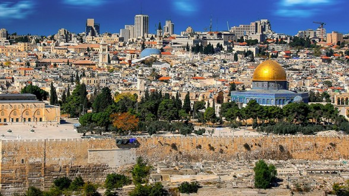
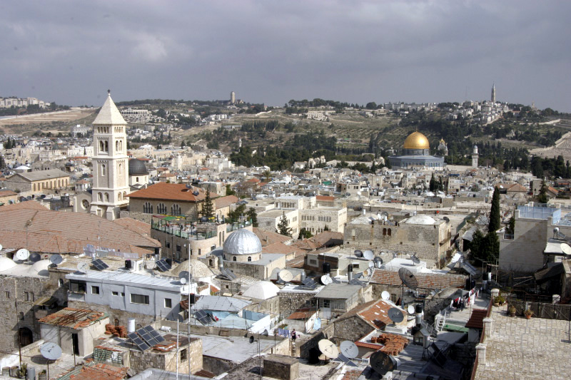
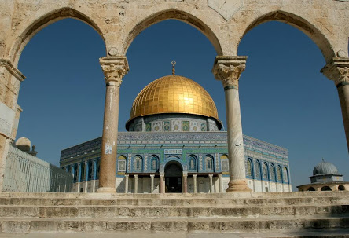

BIENVENUE A JERUSALEM
JERUSALEM
est une ville du Proche-Orient que les Israéliens ont érigée en capitale, que les Palestiniens souhaiteraient comme
capitale et qui tient une place centrale dans les religions juive, chrétienne et musulmane..

Le Mur des Lamentations
est une partie du mur de soutènement de l'esplanade du Temple de Jérusalem, dans le quartier juif
de la vieille ville de Jérusalem, datant du 1er siècle, durant l'achèvement de la construction du Temple d'Hérode.

La vieille ville de Jérusalem est constituée de quatre quartiers qui sont entourés dans leur ensemble par les murailles
de Jérusalem. Sa surface totale ne dépasse pas 0,86 km2.

Le dôme du Rocher ou la coupole du Rocher, appelé parfois mosquée d'Omar, sur jerusalem Est, est le troisième lieu saint musulman
après La Mecque et Médine.
